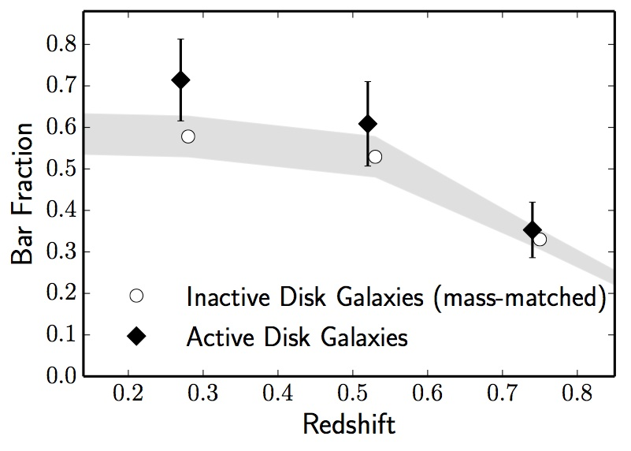
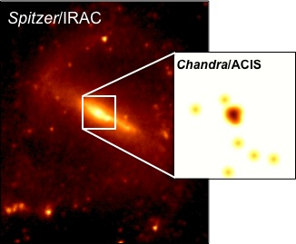
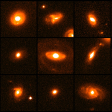
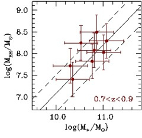

Dr. Mauricio Cisternas
Data Scientist | Astrophysicist

Data Scientist | Astrophysicist

In my research, I try to tackle open questions relating to the growth of supermassive black holes and their host galaxies within the broader context of galaxy evolution. I take advantage of large datasets from space-based galaxy surveys such as S4G and COSMOS. I'm interested in galaxies at high redshifts as well as those nearby. Below, a summary of some relevant results.
|
Today we know that a significant fraction of the BH growth is occurring in
undisturbed disk galaxies, even out to z=2. How do these AGN get their gas?
In our recent paper, we looked at the role of bars in AGN
fueling out to 7 billion years lookback time, and found that
active galaxies are barred only marginally more often than inactive galaxies,
and AGN in barred galaxies are equally luminous as those in unbarred galaxies.
We also see that most AGN at higher redshifts are hosted in unbarred galaxies,
meaning that, while bars can indeed provide a fresh supply of gas to the central
regions of a galaxy, other instabilities can also accomplish the same,
and the subsequent fueling will be
independent of whether a galaxy is barred or not.
Read more: Paper |

Fraction of barred active galaxies as a function of redshifts (black symbols) compared to inactive galaxies |
| 
Spitzer near-infrared image of NGC 1073, with its active nucleus as seen through Chandra in X-rays |
Stellar bars are a viable mechanism to bring gas down and provide the fuel to feed a supermassive black hole, yet thir actual relevance in this process in not completely understood. To better constrain the role of bar-driven inflows on AGN activity, we took a new approach: using a sample of nearby barred galaxies from the S4G survey, we studied whether there is any relation between bar strength -and hence gas inflow rate- and degree of AGN activity. We used Spitzer imaging to quantify the bar strength from its structure and gravitational torque; and Chandra observations to measure AGN luminosities and accretion rates. We found that stronger bars do not result in brighter or more efficient nuclear activity, i.e., the ongoing AGN activity is not closely connected to the stellar bar in the local universe. Read more: Paper |
| Major galaxy merging has been proposed as a plausible
mechanism to trigger black hole growth, yet its actual relevance remains unclear. In our
recent study, we set out to better understand this unresolved issue: using HST/ACS imaging
from the COSMOS survey, we analyzed the morphologies of large samples of active and
inactive galaxies, finding that both samples show a consistent merger fraction of roughly
15%. Together with the fact that the majority of the AGN hosts are disk-dominated,
not likely relics of old major mergers, our results explicitely show that major merging has
not been the dominant AGN fueling mechanism, at least for the last 8 billion years. Read more: Paper - Press Release |
 Example morphologies of AGN host galaxies imaged with the Hubble Space Telescope |
|  Black hole mass-galaxy total stellar mass relation up to z=0.9, in agreement with the z=0 relation for bulge mass (solid line) |
Present-day galaxies are
closely connected to their supermassive black holes, but to understand how this
relation gets established, further observational constraints are required on how galaxy
and BH related at earlier times. In our recent study, we analyzed a large sample of AGN
out to z=0.9 from the COSMOS survey, allowing us to study in detail growing BHs together
with their host galaxies. We found that for these galaxies, BH mass scales with total
galaxy stellar mass in the same way as it does locally, at z=0, with galactic bulge mass.
It is likely that for these galaxies to obey the local relation only a disk-to-bulge
stellar mass redistribution is needed, likely driven by passive secular evolution. Read more: Paper |